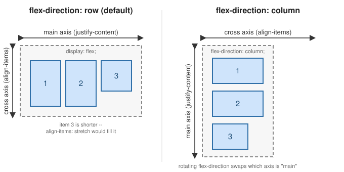
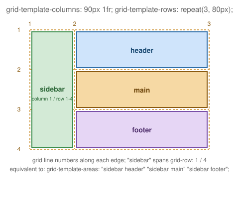

Layout: Float, Flexbox & Grid
|
This section documents general HTML5 and CSS concepts — it is not tied to any specific framework or library. This content was generated with the assistance of AI. Verify it against current MDN documentation and browser-support tables (caniuse.com) before relying on it in production, since HTML/CSS features and browser support continue to evolve. |
CSS has produced three successive techniques for arranging elements on a page: float, flexbox, and grid.
Each is still in active use today, for different jobs — float for wrapping text around media, flexbox for
one-dimensional rows/columns of components, and grid for two-dimensional page-level layouts. This page covers
all three: how elements are positioned relative to one another, how each behaves as the viewport is resized,
and how each interacts with scrolling. It assumes familiarity with the box model
(The Box Model) and the position property (CSS Positioning), since
width/height/margins and positioned ancestors both interact with every layout technique below.
Float-based layout
float is the oldest of the three techniques. It was originally designed for wrapping body text around an
image, and it is still the right tool for exactly that job, but it can also lay out simple multi-column grids
of boxes, as the example below shows.
How floated elements relate to each other
Applying float: left or float: right to an element takes it out of normal document flow horizontally and
pushes it to one edge of its containing block. Unlike position: absolute, a floated element is not removed
from flow entirely: surrounding inline content (text, inline images) still flows around it, wrapping to fill
the remaining horizontal space — this text-wrapping behavior is float’s original purpose and the one thing
neither flexbox nor grid replicate.
img.pull-photo {
float: right;
width: 240px;
margin: 0 0 1rem 1rem;
}When multiple sibling elements are all floated the same direction, they line up next to each other, wrapping
to a new row once a row’s combined width exceeds the container’s width. This is how a float-based product grid
works — each product div floats left at a fixed percentage width:
<section>
<div>product 1</div>
<div>product 2</div>
<div>product 3</div>
<div>product 4</div>
</section>div {
float: left;
width: 25%;
}A floated element must also be given an explicit width (in pixels or a percentage); unlike a block element in
normal flow, a float does not automatically expand to fill the container’s width.
Clearing floats
Because floated children are taken out of flow, a container whose only children are floated collapses to zero height — it has nothing left in normal flow to size itself against. The simplest fix is to make the container establish a new block formatting context:
section {
overflow: hidden;
}overflow: hidden has the side effect of establishing that new formatting context, which forces the container
to expand and enclose its floated children — but as a side effect it also clips any content that overflows the
container’s box, which can be a problem for elements like tooltips or dropdown menus. Two alternatives avoid
that trade-off:
-
The "clearfix" pattern, using a generated pseudo-element with
clear: bothinstead of relying on `overflow’s side effect:.clearfix::after { content: ""; display: table; clear: both; } -
display: flow-root, a modern, purpose-built property that establishes a new block formatting context without any of `overflow: hidden’s clipping side effects:section { display: flow-root; }
Resize and scroll behavior
Float-based layouts have no built-in responsiveness: a fixed pixel or percentage width on each floated item
does not itself adapt to the viewport. Making a float layout responsive means changing the float and width
declarations inside a media query — for example, dropping the float entirely and stacking items in a single
column below a breakpoint (see Media queries below). Float layouts also have no special scrolling behavior
of their own; the container scrolls like any other block box if its content overflows (see
Scroll behavior: overflow and scroll-snap), and overflow: hidden used purely for float-clearing has no
scrolling implication since it establishes a formatting context without necessarily clipping any actual
overflow.
Flexbox layout
Flexbox (display: flex) replaced float as the go-to technique for laying out a row or column of components — a navbar, a card’s internal content, a toolbar — without float’s text-wrapping baggage or the need to clear
anything.
Flex container and flex items
Turning an element into a flex layout only requires one declaration on the parent:
section {
display: flex;
}The element that receives display: flex (or inline-flex) becomes the flex container; its direct children
automatically become flex items, laid out along a single line by default. flex-wrap: wrap allows items to
wrap onto additional lines once they no longer fit:
section {
display: flex;
flex-wrap: wrap;
}
div {
flex-basis: 25%;
}Main axis and cross axis
Every flex container has two axes: the main axis, along which items are laid out and spaced (controlled by
flex-direction and justify-content), and the cross axis, perpendicular to it (controlled by
align-items/align-content). flex-direction: row (the default) makes the main axis horizontal; switching
to flex-direction: column rotates the main axis to vertical — and with it, every main-/cross-axis property’s
effective direction, without changing any other declaration.

This distinction matters because most flexbox properties are named for the axis they act on, not for a literal
screen direction — justify-content: center centers items along whichever axis is currently "main."
Alignment: justify-content, align-items, align-content
| Property | What it aligns |
|---|---|
|
Distributes items along the main axis. Common values: |
|
Aligns items along the cross axis, within a single line. Common values: |
|
Aligns multiple lines (only relevant with |
.toolbar {
display: flex;
justify-content: space-between; /* main axis: push first/last items to the edges */
align-items: center; /* cross axis: vertically center every item */
}Sizing and ordering: flex-grow, flex-shrink, flex-basis, order, gap
-
flex-basissets an item’s starting size along the main axis, before growing/shrinking is applied — conceptually the flex equivalent ofwidthin a float-based row. -
flex-grow(default0) is a unitless proportion of any leftover space along the main axis the item should absorb, relative to its siblings'flex-growvalues. An item withflex-grow: 2grows twice as fast as a sibling withflex-grow: 1. -
flex-shrink(default1) is the same idea in reverse: a unitless proportion of overflow the item should give up when the container is too small to fit every item at itsflex-basis. A row of star-rating icons, for instance, can setflex-shrink: 1on each image so the icons shrink together, proportionally, rather than overflowing the container as the viewport narrows. -
flex-grow,flex-shrink, andflex-basisare usually set together via theflexshorthand:flex: <grow> <shrink> <basis>.flex: 1(shorthand forflex: 1 1 0%) is the common "share remaining space equally" declaration for a row of equal-width columns. -
order(default0) changes an item’s visual position along the main axis without touching the underlying HTML/DOM order — lower values render first. This is purely visual: screen readers and keyboard tab order still follow DOM order, soordershould not be relied on to fix an inaccessible source order. -
gap(with the longhandsrow-gap/column-gap) inserts fixed spacing between flex items, on both axes, without needing per-item margins — and without the "extra margin on the last item" problem that margin-based spacing has.
.rating {
display: flex;
gap: 0.5rem;
}
.rating img {
flex-shrink: 1; /* icons shrink together rather than overflow the container */
}
.card {
display: flex;
}
.card .sidebar { flex: 0 0 200px; } /* fixed 200px, never grows or shrinks */
.card .content { flex: 1 1 0%; } /* takes all remaining space */Resize and scroll behavior in flex layouts
Flexbox’s flex-wrap/flex-grow/flex-shrink already provide a form of built-in responsiveness — items
reflow onto new lines or resize proportionally as the container shrinks, without a media query. A common
pattern layers a flex-direction change on top, switching a horizontal toolbar to a stacked column below a
breakpoint:
.toolbar {
display: flex;
flex-direction: row;
}
@media (max-width: 600px) {
.toolbar {
flex-direction: column;
}
}For scroll behavior, a flex container with overflow-x: auto and flex-wrap: nowrap turns into a horizontally
scrollable row (a common carousel pattern); pairing it with scroll-snap-type/scroll-snap-align makes that
scrolling snap to item boundaries instead of stopping at an arbitrary offset (see
Scroll behavior: overflow and scroll-snap).
Grid layout
CSS Grid (display: grid) is the newest of the three techniques, and the only one designed from the start for
two-dimensional layout — rows and columns together, rather than a single line of items. This section starts
from the basics (display: grid and grid-template-columns) and then covers named areas, named lines, gap,
and responsive track sizing.
Grid container and grid items
As with flex, one declaration on the parent activates the layout, and its direct children become grid items:
section {
display: grid;
grid-template-columns: auto auto auto auto;
}Unlike float or flexbox, grid items do not need an explicit width (or flex-basis) at all for simple cases — the column tracks defined on the container already determine each item’s size.
Defining tracks
grid-template-columns/grid-template-rows define the size of each column/row track. Besides fixed lengths
and auto, grid introduces the fr ("fraction") unit, which divides any remaining space proportionally — similar in spirit to flex-grow, but for the whole track rather than one item:
.page {
display: grid;
grid-template-columns: 200px 1fr 1fr; /* fixed sidebar, two equal flexible columns */
grid-template-rows: auto 1fr auto;
gap: 1rem;
}repeat() avoids writing out repetitive track lists, and minmax() gives a track a size range instead of a
fixed value — combined with the auto-fit keyword, this produces a card grid that reflows its column count
automatically as the viewport resizes, with no media query at all:
.cards {
display: grid;
grid-template-columns: repeat(auto-fit, minmax(220px, 1fr));
gap: 1.5rem;
}Naming lines and areas
Every track boundary is a numbered grid line (column lines and row lines, both starting at 1), and items can
be placed by referencing those line numbers directly with grid-column/grid-row:
.hero {
grid-column: 1 / 3; /* from column line 1 to column line 3, spanning two tracks */
grid-row: 1 / 2;
}Lines can also be given names when the tracks are declared, making later placement rules self-documenting:
.page {
display: grid;
grid-template-columns: [full-start] 1fr [content-start] 3fr [content-end] 1fr [full-end];
}
.hero {
grid-column: full-start / full-end; /* bleeds edge-to-edge */
}
.article {
grid-column: content-start / content-end;
}For whole-layout composition, grid-template-areas names cells rather than lines, laying the template out as
an ASCII grid that mirrors the resulting page visually — each item then just declares which named area it
belongs to via grid-area:
.page {
display: grid;
grid-template-columns: 90px 1fr;
grid-template-rows: auto 1fr auto;
grid-template-areas:
"sidebar header"
"sidebar main"
"sidebar footer";
gap: 1rem;
}
.sidebar { grid-area: sidebar; }
.header { grid-area: header; }
.main { grid-area: main; }
.footer { grid-area: footer; }
The diagram above is exactly this sidebar/header/main/footer layout: sidebar spans grid line 1 to
line 4 on the row axis (three row tracks), while header, main, and footer each occupy one row track in
the second column.
Placing and aligning items
Grid’s alignment properties mirror flexbox’s, but apply across two axes at once rather than one:
justify-items/align-items position an item within its own cell (justify-items along the row axis,
align-items along the column axis), while justify-content/align-content position the whole track grid
within the container when the tracks don’t fill it completely — analogous to justify-content in flexbox, but
along both axes. Items not explicitly placed fall into the implicit grid, whose auto-generated track sizes
and placement direction are controlled by grid-auto-rows/grid-auto-columns/grid-auto-flow.
Resize and scroll behavior in grid layouts
repeat(auto-fit, minmax(…)) (shown above) is grid’s signature responsive pattern: the browser recalculates
how many tracks fit as the viewport resizes, with no media query. grid-template-areas is also commonly
redeclared entirely inside a media query, reflowing a whole page layout at a breakpoint (for example collapsing
the sidebar/header/main/footer layout above into a single stacked column below a given width). For scroll
behavior, overflow on the grid container plus scroll-snap-type produces a snapping grid or filmstrip in
exactly the same way as flexbox (see next section); CSS subgrid (grid-template-columns: subgrid) is a
further, newer refinement letting a nested grid’s tracks align to its parent’s, though browser support should be
checked before relying on it.
Responsive layout techniques common to all three
The following techniques apply regardless of which of the three layout modes above is in use.
Media queries
@media conditionally applies a block of CSS based on characteristics of the viewport (most commonly its
width), letting a layout redeclare its float/flex/grid properties at defined breakpoints:
.layout {
display: grid;
grid-template-columns: 1fr; /* single column by default */
}
@media screen and (min-width: 768px) {
.layout {
grid-template-columns: 200px 1fr; /* sidebar + content once there's room */
}
}Container queries
Container queries (@container) apply styles based on the size of an ancestor container rather than the
viewport — useful when a component (a card, a widget) needs to adapt to the space it happens to be placed in,
independent of the overall page width. A container-type declaration first opts an element in to being
queried:
.card {
container-type: inline-size;
container-name: cards; /* optional: scopes the query below to containers named "cards" */
}
.card .title {
font-size: 1rem;
}
@container cards (min-width: 400px) {
.card .title {
font-size: 1.5rem; /* the card itself has room, regardless of viewport width */
}
}This is particularly relevant to flex and grid items, since the same card component can end up in a wide single-column area or a narrow grid track depending on where it’s placed, and a container query lets it adapt to either without the parent layout needing to know about it.
Responsive images: srcset, sizes, and picture
Layout width alone doesn’t make images responsive — the browser also needs to be told which image file to
fetch for a given size, so it isn’t downloading an oversized image into a narrow flex/grid item. srcset plus
sizes lets the browser pick the best-matching resolution from a set of candidates:
<img
src="product-800.jpg"
srcset="product-400.jpg 400w, product-800.jpg 800w, product-1200.jpg 1200w"
sizes="(max-width: 600px) 100vw, 50vw"
alt="Product photo"
/><picture> goes further, letting different image files entirely (not just resolutions) be served per
breakpoint or format, with the final <img> as the fallback:
<picture>
<source media="(min-width: 900px)" srcset="hero-wide.jpg" />
<source media="(min-width: 600px)" srcset="hero-medium.jpg" />
<img src="hero-narrow.jpg" alt="Hero banner" />
</picture>Dynamic viewport units
vh/vw do not account for mobile browser chrome (address bars, toolbars) that can appear or retract while
scrolling, which makes a 100vh element jump in size as that chrome shows or hides. Newer viewport units
address this directly: svh/svw ("small viewport") assume browser UI is fully expanded, lvh/lvw ("large
viewport") assume it’s fully retracted, and dvh/dvw ("dynamic viewport") track whichever is currently
visible, clamped between the two:
.hero {
min-height: 100dvh; /* fills the visible viewport without jumping as mobile UI shows/hides */
}Scroll behavior: overflow and scroll-snap
Any container — floated, flex, or grid — becomes scrollable once overflow (or the axis-specific
overflow-x/overflow-y) is set to auto or scroll and its content exceeds its box. scroll-snap-type on
the scrolling container, combined with scroll-snap-align on its children, turns free scrolling into a
snapping experience that stops on item boundaries — the standard technique for horizontal carousels and
full-screen sections alike:
.carousel {
display: flex;
overflow-x: auto;
scroll-snap-type: x mandatory;
}
.carousel > * {
flex: 0 0 100%;
scroll-snap-align: start;
}Scroll position can also drive animation directly, without JavaScript scroll-event listeners, via
animation-timeline: scroll(): the animation’s progress is tied to the scroll offset of its nearest scrolling
ancestor instead of elapsed time, which is how a scroll-linked progress bar can be built purely in CSS:
#progress {
transform-origin: 0 50%;
animation: grow-progress auto linear;
animation-timeline: scroll();
}
@keyframes grow-progress {
from { transform: scaleX(0); }
to { transform: scaleX(1); }
}Summary
| Layout mode | Relative positioning | Resize behavior | Scroll behavior |
|---|---|---|---|
Float |
Items float to one edge; inline content wraps around them; a container needs explicit clearing
( |
No built-in responsiveness — requires media queries to change |
No special behavior of its own; scrolls as a normal block if content overflows. |
Flexbox |
One-dimensional: items lay out along a main axis, aligned on a cross axis, via |
|
|
Grid |
Two-dimensional: items are placed by line number, name, or |
|
Same |